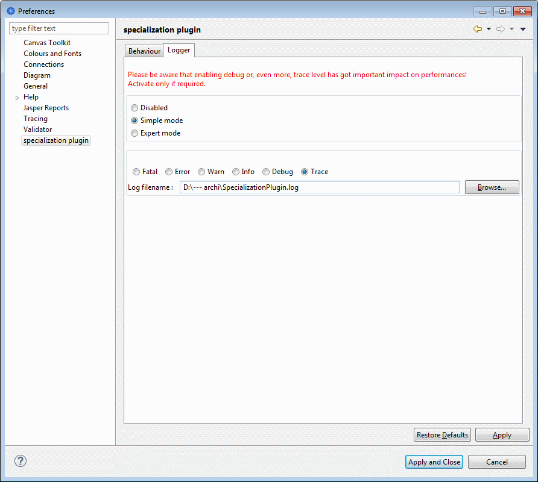

Specialization plugin
Preference page - Logger

This preference page allows you to create a log file, useful in case the plugin does not behave as you wish.
The simple mode is the easiest way to create this log file as you just need to specify the level of information you require and the log filename. The expert mode allows you to completely customize the log mechanism but requires Log4J knowledge.
Please be aware that the trace mode generates a lot of information and therefore has got an impact on the performances. You may activate it only if required.